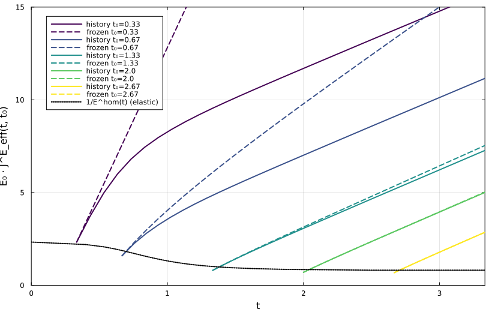
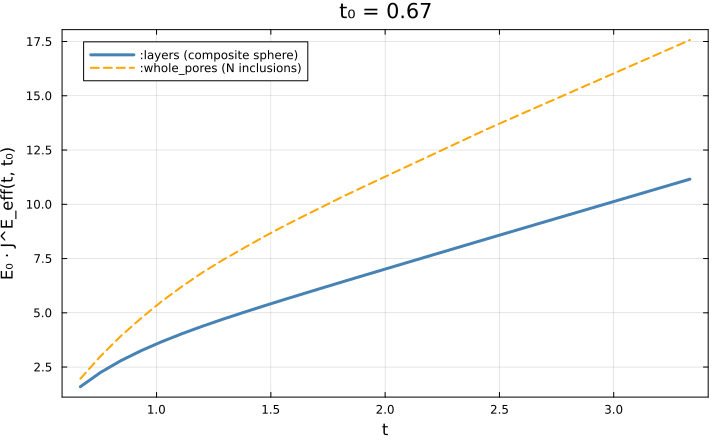

Ageing creep of solidifying cementitious materials
This chapter implements the ageing-creep homogenization model of [48], mirroring the corresponding chapter of the Echoes book [42]. It describes a composite in which one phase solidifies progressively — as C-S-H does during hydration — so the effective relaxation tensor $\mathbb R^{\rm hom}(t, t')$ depends on the observation time $t$ and the loading time $t'$ independently. The Laplace–Carson correspondence principle no longer applies; the homogenization is done directly in the time domain by homogenize_alv.
The composite has three phase types:
| Phase | Fraction | Stiffness | Rheology |
|---|---|---|---|
| Matrix | $f_0 = 0.6$ | $E_0=1,\ \nu_0=0.2$ | Maxwell |
| Solidifying inclusions | $f_\infty = 0.3$ | $E_1=5,\ \nu_1=0.3$ | Maxwell (per-layer setting time) |
| Pore | $1-f_0-f_\infty$ | $E_p\approx0$ | elastic |
Both viscoelastic phases obey a Maxwell relaxation law with separate bulk and shear characteristic times.
using MeanFieldHom
using TensND
using LinearAlgebra
using Plots
gr() # headless backend; GKSwstype is set to "100" in make.jl
# Matrix
const E0, ν0, f0 = 1.0, 0.2, 0.6
const k0, μ0 = E0 / (3(1 - 2ν0)), E0 / (2(1 + ν0))
const η0, γ0 = 0.2, 0.133 # bulk / shear relaxation times
# Solidifying phase
const E1, ν1, finf = 5.0, 0.3, 0.3
const k1, μ1 = E1 / (3(1 - 2ν1)), E1 / (2(1 + ν1))
const η1, γ1 = 1.0, 1.67
# Pore (elastic, near-zero)
const Ep, νp = 1.0e-8, 0.2
const kp, μp = Ep / (3(1 - 2νp)), Ep / (2(1 + νp))
const fp = 1 - f0 - finf
const C_p = TensISO{3}(3kp, 2μp)
make_R0() = maxwell_iso(k0, μ0, η0, γ0)
make_R1() = maxwell_iso(k1, μ1, η1, γ1)Solidification kinetics
The solidified fraction grows as $f(t) = f_\infty\, t^\alpha/(1+t^\alpha)$; the setting time of the layer carrying midpoint fraction $f_k = (k+\tfrac12) f_\infty/N$ is $t_k = (f_k/(f_\infty-f_k))^{1/\alpha}$.
function setting_times(N, α)
F = [(i + 0.5) * finf / N for i in 0:(N - 1)]
return [(f / (finf - f))^(1 / α) for f in F]
endPer-layer relaxation law: history-dependent vs frozen
A newly formed layer is deposited stress-free and creeps only from its setting time on. History-dependent (fixed = false): layer $i$ responds as a solid only if it had set at the loading time $t'$. Frozen (fixed = true): the decision is made once, at the start of the observation window $t_0$ — a cheaper but physically approximate model.
function inclusion_law(t_set, t0; fixed)
if fixed
t0 ≥ t_set && return make_R1()
return ViscoLaw((t, tp) -> (t < tp ? zero(C_p) : C_p), :relaxation)
else
R1 = make_R1()
return ViscoLaw(
function (t, tp)
t < tp && return zero(C_p)
tp ≥ t_set ? R1.eval_fun(t, tp) : C_p
end, :relaxation)
end
endTwo equivalent RVE topologies
[48]'s key contribution is that the $N$ solidifying shells and the pore can be packed into a single composite sphere instead of $N+1$ separate inclusions — reducing $N+1$ Eshelby problems to one. MeanFieldHom supports both: :whole_pores ($N$ separate spherical inclusions) and :layers (one LayeredSphere whose per-layer moduli are ageing relaxation laws).
function build_rve_whole_pores(N, α, t0; fixed)
rve = RVE(:M)
add_matrix!(rve, Ellipsoid(1.0), Dict(:C => make_R0()))
add_phase!(rve, :PORE, Ellipsoid(1.0), Dict(:C => heaviside_law(C_p)); fraction = fp)
t_sets = setting_times(N, α)
for i in 1:N
add_phase!(rve, Symbol(:INC_, i), Ellipsoid(1.0),
Dict(:C => inclusion_law(t_sets[i], t0; fixed = fixed)); fraction = finf / N)
end
return rve
end
function build_rve_layers(N, α, t0; fixed)
rve = RVE(:M)
add_matrix!(rve, Ellipsoid(1.0), Dict(:C => make_R0()))
t_sets = setting_times(N, α)
f_layers = vcat([fp], fill(finf / N, N)) # pore innermost, shells outward
cumulative = cumsum(f_layers)
radii = ntuple(k -> cumulative[k]^(1 / 3), N + 1)
moduli = ntuple(N + 1) do k
k == 1 ? heaviside_law(C_p) : inclusion_law(t_sets[N - k + 2], t0; fixed = fixed)
end
sphere = LayeredSphere(radii, moduli)
add_phase!(rve, :INCLUSION, sphere, Dict(:C => heaviside_law(C_p)); fraction = fp + finf)
return rve
end
build_rve(N, α, t0, model; fixed) =
model === :layers ? build_rve_layers(N, α, t0; fixed = fixed) :
build_rve_whole_pores(N, α, t0; fixed = fixed)Time-domain homogenization and effective creep
homogenize_alv returns the $6n\times6n$ block relaxation matrix over the time grid; its Volterra inverse (volterra_inverse) is the creep-compliance matrix, from which the uniaxial creep $E_0 J^E_{\rm eff}(t,t_0)$ follows.
function uniaxial_creep(R)
J = volterra_inverse(R; block_size = 6)
n = size(J, 1) ÷ 6
return [sum(J[6(i - 1) + 1, 6(j - 1) + 1] for j in 1:n) for i in 1:n]
end
function creep_curve(N, α, t0, T, model; fixed)
R = homogenize_alv(build_rve(N, α, t0, model; fixed = fixed), MoriTanaka(), :C; times = T)
return uniaxial_creep(R)
endResults
For five loading ages $t_0$, the history-dependent (solid) and frozen (dashed) creep curves of the efficient :layers model, with the instantaneous elastic compliance $1/E^{\rm hom}(t)$ as reference:
const N, α_solid, t_max = 20, 4.0, 10 / 3
loading_ages = (1 / 3, 2 / 3, 4 / 3, 2.0, 8 / 3)
cmap = palette(:viridis, length(loading_ages))
p = plot(; xlabel = "t", ylabel = "E₀ · J^E_eff(t, t₀)", legend = :topleft,
framestyle = :box, xlims = (0, t_max), ylims = (0, 15), size = (820, 520))
for (k, t0) in enumerate(loading_ages)
T = collect(range(t0, t_max; length = 31))
Jh = creep_curve(N, α_solid, t0, T, :layers; fixed = false)
Jf = creep_curve(N, α_solid, t0, T, :layers; fixed = true)
plot!(p, T, E0 .* Jh; lw = 2, color = cmap[k], label = "history t₀=$(round(t0, digits = 2))")
plot!(p, T, E0 .* Jf; lw = 2, color = cmap[k], ls = :dash, label = "frozen t₀=$(round(t0, digits = 2))")
end
# Elastic reference: frozen instantaneous stiffness at each time.
function elastic_compliance(t)
t_sets = setting_times(N, α_solid)
rve = RVE(:M)
add_matrix!(rve, Ellipsoid(1.0), Dict(:C => TensISO{3}(3k0, 2μ0)))
add_phase!(rve, :PORE, Ellipsoid(1.0), Dict(:C => C_p); fraction = fp)
for i in 1:N
Ci = t ≥ t_sets[i] ? TensISO{3}(3k1, 2μ1) : C_p
add_phase!(rve, Symbol(:INC_, i), Ellipsoid(1.0), Dict(:C => Ci); fraction = finf / N)
end
return E0 / max(E_nu(homogenize(rve, MoriTanaka(), :C))[1], 1e-12)
end
T_ref = vcat([0.0], filter(≤(t_max), setting_times(N, α_solid)), [t_max])
plot!(p, T_ref, elastic_compliance.(T_ref); lw = 2, color = :black, ls = :dot,
label = "1/E^hom(t) (elastic)")
p
Early loading ages ($t_0$ small) give much larger creep — many layers have not yet solidified — decreasing toward the elastic limit as $t_0$ grows. The frozen approach overestimates creep at early ages (it ignores solidification before $t_0$) and converges with the history-dependent result at late ages.
Composite sphere vs separate inclusions
The :layers composite sphere and the :whole_pores collection of $N+1$ separate inclusions are different morphologies — the first places the pore and the solidifying shells concentrically (as hydrates deposit around a pore), the second scatters them independently in the matrix. They therefore give different effective creep: :whole_pores is systematically more compliant.
t0 = 2 / 3
T = collect(range(t0, t_max; length = 31))
Jl = creep_curve(N, α_solid, t0, T, :layers; fixed = false)
Jw = creep_curve(N, α_solid, t0, T, :whole_pores; fixed = false)
pc = plot(; xlabel = "t", ylabel = "E₀ · J^E_eff(t, t₀)", legend = :topleft,
framestyle = :box, size = (720, 440), title = "t₀ = $(round(t0, digits = 2))")
plot!(pc, T, E0 .* Jl; lw = 3, color = :steelblue, label = ":layers (composite sphere)")
plot!(pc, T, E0 .* Jw; lw = 2, color = :orange, ls = :dash, label = ":whole_pores (N inclusions)")
pc
The composite sphere is the morphologically-motivated, efficient model of [48] — one Eshelby problem instead of $N+1$.
MeanFieldHom reproduces the Echoes reference for both topologies to better than 1 % (:layers $E_0 J$ ranges 1.60 → 11.16 vs Echoes 1.60 → 11.06; :whole_pores 1.96 → 17.57 vs 1.96 → 17.54). Note that the Echoes book describes the two as yielding "identical compliance curves"; its own code does not — they differ by $\approx 6.5$ in $E_0 J$ here, exactly as MeanFieldHom finds. The composite-sphere packing is an efficient, physically-motivated model, not an exact reformulation of the separate- inclusion RVE.